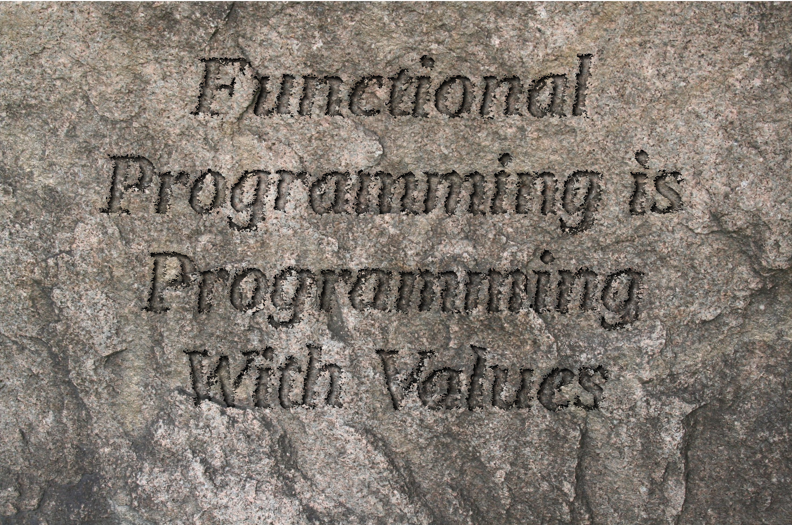
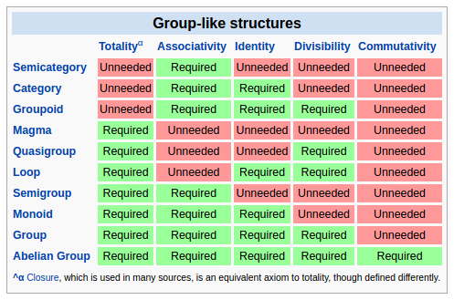

Kris Nuttycombe - @nuttycom - May 28, 2016

The purpose of a type system is to verify that we have minimized the potential state space of an application such that only valid states are representable.
typedef Pair<A, B> = {
a: A,
b: B
};
typedef SIPair = Pair<String, Int>;
enum Either<A, B> {
Left(a: A);
Right(b: B);
}
var b: Bool = /* censored */;var i: Int = /* censored */;typedef BoolIntPair = { b: Bool, i: Int };
enum Either<A, B> {
Left(a: A);
Right(b: B);
}
typedef BoolOrInt = Either<Bool, Int>;
var b: Bool = /* censored */;
// 2 states
var i: Int = /* censored */;
// 2^32 states
var x: { b: Bool, i: Int } = /* censored */;
// 2 * 2^32 states
var x: Either<Bool, Int> = /* censored */;
// 2 + 2^32 states
typedef Either<A, B> = {
function apply<C>(ifLeft: A -> C, ifRight: B -> C): C
}
function left<A, B>(a: A): Either<A, B> = {
function apply<C>(ifLeft: A -> C, ifRight: B -> C): C {
return ifLeft(a);
}
}
function right<A, B>(a: A): Either<A, B> = {
function apply<C>(ifLeft: A -> C, ifRight: B -> C): C {
return ifRight(a);
}
}
enum JValue {
JObject(xs: Array<JAssoc>);
JArray(xs: Array<JValue>);
JString(s: String);
JNum(f: Float);
JBool(b: Bool);
JNull;
}
typedef JAssoc = {
fieldName: String,
value: JValue
}
var f : A -> B = ...
enum OneOfThree = { First; Second; Third; };
typedef OneOfThree = OneOfThree -> Bool;
//cardinality of OneOfThree = 2^3
function compose<A, B, C>(f: B -> C, g: A -> B): A -> C {
return function(a: A) {
return f(g(a))
};
}
f.compose(g.compose(h)) = (f.compose(g)).compose(h)
f.compose(g)(x) = f(g(x))
f.compose(g.compose(h)(x)) = f(g.compose(h)(x))
= f(g(h(x)))
= (f.compose(g))(h(x)))
= (f.compose(g)).compose(h)(x)
Programs must be written for people to read, and only incidentally for machines to execute. - Abelson, Structure and Interpretation of Computer Programs.
An associative binary operation that combines two values of a type to yield a new value of that type.
typedef Semigroup<A> = {
append: A -> A -> A
};
s.append(s.append(a0, a1), a2) == s.append(a0, s.append(a1, a2))
function nelSemigroup<A>(): Semigroup<NonEmpty<A>> {
function append0(e0: NonEmpty<A>, e1: NonEmpty<A>): NonEmpty<A> {
return switch e0 {
case Single(a): ConsNel(a, e1);
case ConsNel(a, rest): ConsNel(a, append0(rest, e1));
};
}
return { append: append0 };
}

A semigroup with an identity element.
typedef Monoid<A> = {
mzero: A,
append: A -> A -> A
};
m.append(m.mzero, a) == a
m.append(a, m.mzero) == a
function kComposeOption<A, B, C>(f: B -> Option<C>, g: A -> Option<B>):
A -> Option<C> {
return function(a: A) {
return switch g(a) {
case Some(b): f(b);
case None: None;
};
};
}
function kComposeList<A, B, C>(f: B -> List<C>, g: A -> List<B>):
A -> List<C> { ... }
function kComposePromise<A, B, C>(f: B -> Promise<C>, g: A -> Promise<B>):
A -> Promise<C> { ... }
function liftA2Zip<A, B, C>(f: A -> B -> C): ZipList<A> -> ZipList<B> -> ZipList<C>;
function liftA2Par<A, B, C>(f: A -> B -> C): Par<A> -> Par<B> -> Par<C>;
function liftA2Val<E, A, B, C>(f: A -> B -> C, s: Semigroup<E>):
Validation<E, A> -> Validation<E, B> -> Validation<E C>
sealed trait FreeAp[F[_], A]
case class Pure[F[_], A](a: A) extends FreeAp[F, A]
case class Ap[F[_], A, I](f: F[I], k: FreeAp[F, I => A])
object FreeAp {
def liftA2[F[_], A, B, C](f: A => B => C):
FreeAp[F, A] => FreeAp[F, B] => FreeAp[F, C] = ???
}
enum Schema<A> {
BoolSchema: Schema<Bool>;
FloatSchema: Schema<Float>;
IntSchema: Schema<Int>;
StrSchema: Schema<String>;
UnitSchema: Schema<Unit>;
ObjectSchema<B>(propSchema: ObjAp<B, B>): Schema<B>;
ArraySchema<B>(elemSchema: Schema<B>): Schema<Array<B>>;
// schema for sum types
OneOfSchema<B>(alternatives: Array<Alternative<B>>): Schema<B>;
// This allows us to create schemas that parse to newtype wrappers
IsoSchema<B, C>(base: Schema<B>, f: B -> C, g: C -> B): Schema<C>;
Lazy<B>(s: Void -> Schema<B>): Schema<B>;
}
enum Alternative<A> {
Prism<B>(id: String, base: Schema<B>, f: B -> A, g: A -> Option<B>);
}
enum PropSchema<O, A> {
Required<B>(field: String, vschema: Schema<B>, accessor: O -> B):
PropSchema<O, B>;
Optional<B>(field: String, vschema: Schema<B>, accessor: O -> Option<B>):
PropSchema<O, Option<B>>;
}
enum ObjAp<O, A> {
Pure(a: A);
Ap<I>(s: PropSchema<O, I>, k: ObjAp<O, I -> A>);
}
class Person {
public var name: String;
public var age: Option<Int>;
public var children: Array<Person>;
public function new(name: String, age: Int, children: Array<Person>) {
this.name = name; this.age = age; this.children = children:
}
public static var schema: Schema<Person> = ObjectSchema(
liftA3(
Person.new,
Required("name", StrSchema, function(x: Person) return x.name),
Optional("age", IntSchema, function(x: Person) return x.age),
Required("children",
ArraySchema(Lazy(function() return Person.schema)),
function(x: Person) return x.children)
)
);
}
function parseJSON<A>(schema: Schema<A>, v: JValue): Either<ParseErrors, A>
function renderJSON<A>(schema: Schema<A>, a: A): JValue
function toJsonSchema<A>(schema: Schema<A>): JValue
function gen<A>(schema: Schema<A>): Gen<A>
sealed trait Free[F[_], A]
case class Pure[F[_], A](a: A) extends Free[F, A]
case class Bind[F[_], A, B](s: Free[F, A], f: A => Free[F, B]) extends Free[F, A]
object Free {
def kCompose[F[_]: Functor, A, B, C](f: B => Free[F, C], f: A => Free[F, B]):
A => Free[F, C] = ???
}
sealed trait FreeAp[F[_], A]
case class Pure[F[_], A](a: A) extends FreeAp[F, A]
case class Ap[F[_], A, I](f: F[I], k: FreeAp[F, I => A])
class PLens<S, T, A, B> {
public var get(default, null): S -> A;
public var set(default, null): B -> (S -> T);
public function new(get: S -> A, set: B -> (S -> T)) {
this.get = get;
this.set = set;
}
public function modify(f: A -> B): S -> T {
return function(s: S) {
return this.set(f(this.get(s)))(s);
};
}
}
function view<S, T, A, B>(s: S, la: PLens<S, T, A, B>): A {
return la.get(s);
}
function update<S, T, A, B>(s: S, la: PLens<S, T, A, B>, b: B): T {
return la.set(b)(s);
}
function compose<S, T, A, B, C, D>(stab: PLens<S, T, A, B>, abcd: PLens<A, B, C, D>):
PLens<S, T, C, D> {
return PLenses.pLens(
function(s: S): C return abcd.get(stab.get(s)),
function(d: D): S -> T return stab.modify(abcd.set(d))
);
}
(Zygohistomorphic prepromorphism)